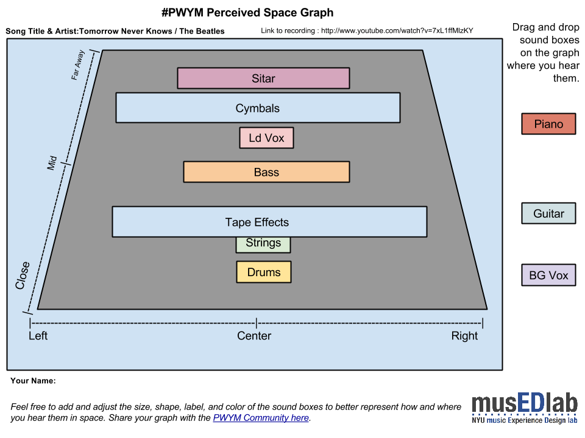

Drummers all over gather here for drum talk and all things on the beat including drum machines
Community discussionParticipant 344#1
By Affinity/Interest
2 readable posts · Team contributions are labelled separately from community replies.
Drummers all over gather here for drum talk and all things on the beat including drum machines
Percieved Space Graph [link withheld] Perceived Space Graph for the song " Tomorrow Never Knows" by The Beatles. Youtube version. Some of the instruments seem to change position at different parts of the song. For example:the tamboura starts front dead center then moves to the far away position same thing with the strings.Tomorrow Never Knows [link withheld]
Embedded media omitted from this public edition
